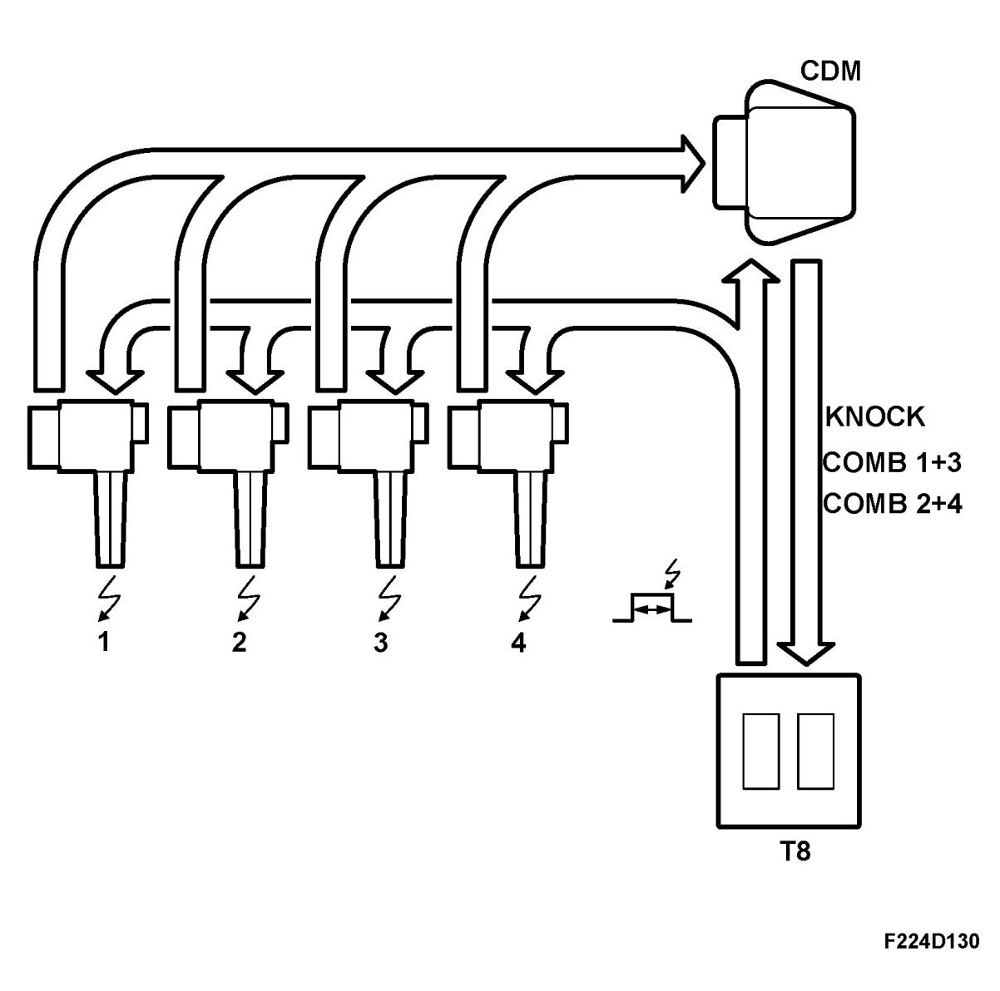
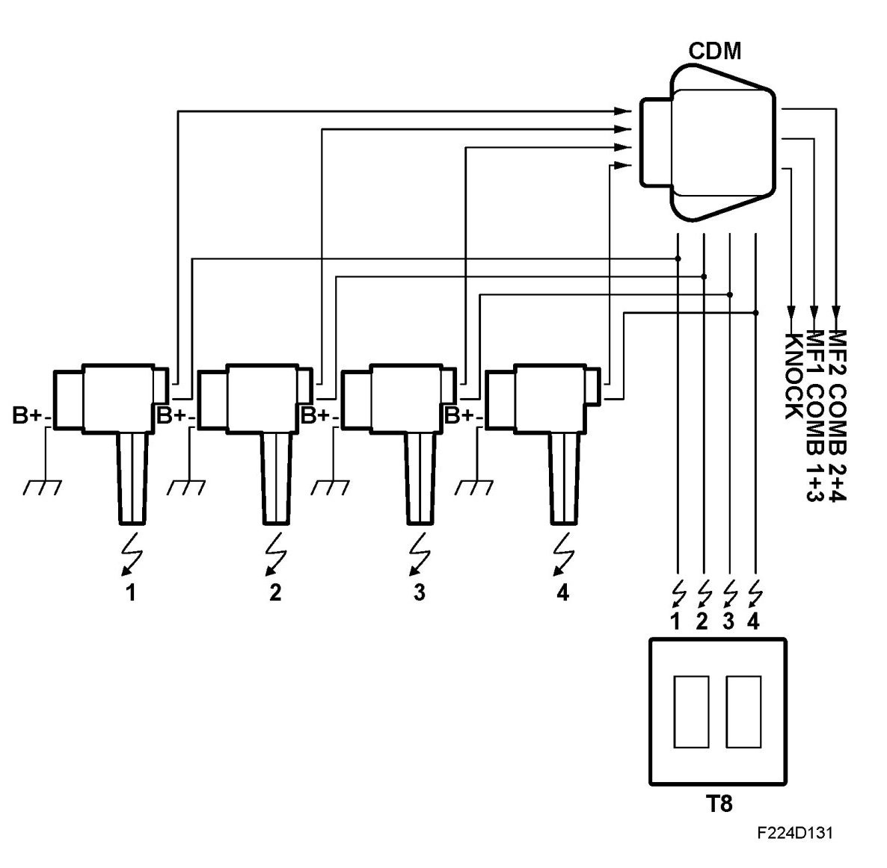
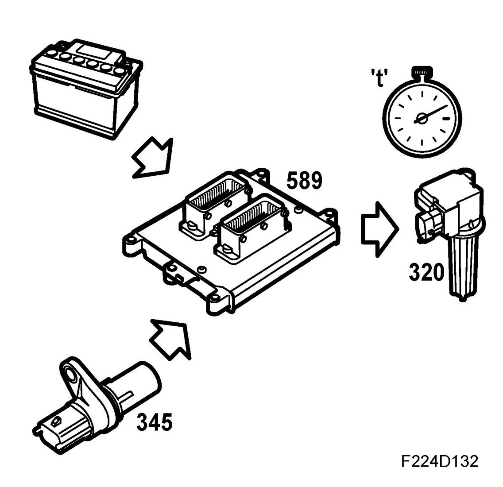

Ignition System
Ignition System
Ignition system, general
The ignition system is used to generate the igniting spark, measure the combustion quality and knocking. It comprises four inductive ignition coils, one for each cylinder, with integrated power stage and ionization current measurement, CDM (Combustion Detection Module) that carries out initial processing of the ionization signal from the respective ignition coils. The ignition system receives four ignition trigger signals from the ECM and delivers two combustion signals plus one knock signal to the ECM. The ignition coils are screwed on above the spark plugs of the respective cylinders with an aluminium cover over them. The ignition coils are individually exchangeable. CDM is located on a bracket on the left-hand side of the cylinder head.

Ignition
The ignition system comprises four inductive ignition coils, one for each cylinder. The ignition coils are supplied with B+ on pin 1 from the main relay (229), pin 2 is connected to grounding point G7.

When the main relay is activated, B+ is applied to pin 1 on the ignition coils. When pin 3 on each ignition coil is supplied with B+ by ECM, a power transistor integrated in the ignition coil will close the primary circuit where the primary winding comprises relatively few coils of copper wire. A magnetic field now gradually forms in the ignition coil and just as the spark is to ignite, ECM will stop supplying B+ to pin 3 and a high tension will be induced across the secondary winding of the ignition coil.
The time during which ECM supplies pin 3 with B+ and the magnetic field is formed in the ignition coil depends on the battery voltage and the engine speed. See "charging times, ignition coils" for more information. The voltage on the secondary side is very high as there is a large number of copper windings and builds up until a spark crosses the spark plug gap. This takes place at approx. 5-30 kV depending on the prevailing conditions in the cylinder in question. The high pressure that arises from high loading of the engine requires a higher voltage compared to lighter operating conditions.
The ignition coils can generate voltages of up to 40 kV.
Four ignition trigger lines from ECM are connected to the ignition system as follows:
- Ignition coil (320a) for cylinder 1 is connected to ECM pin 27(B)
- Ignition coil (320b) for cylinder 2 is connected to ECM pin 14(B)
- Ignition coil (320c) for cylinder 3 is connected to ECM pin 13(B)
- Ignition coil (320d) for cylinder 4 is connected to ECM pin 22(B)
CDM (740) is also connected to the ignition trigger lines but has nothing to do with the ignition itself but is a synchronizing pulse for processing the ionization current signal.
Charging time, general
The ignition coil charging time depends on the system voltage and engine speed. The objective is to obtain the correct energy/voltage in the spark irrespective of the battery voltage and engine speed.
The charging time is around 4 ms at 2000 rpm and normal system voltage.

Principle, voltage dependence
A relatively low battery voltage requires a longer charging time to obtain the same spark energy/voltage.
Conversely, a relatively high battery voltage gives a shorter charging time in order to prevent unnecessary heating of the ignition coils and to reduce wear on the spark plug electrodes.
Principle, engine speed dependence
The ignition coil charging time is also engine speed dependent. This is to give the correct energy/voltage in the spark, no more, which would cause wear on the spark plug, or less, which would cause misfiring.